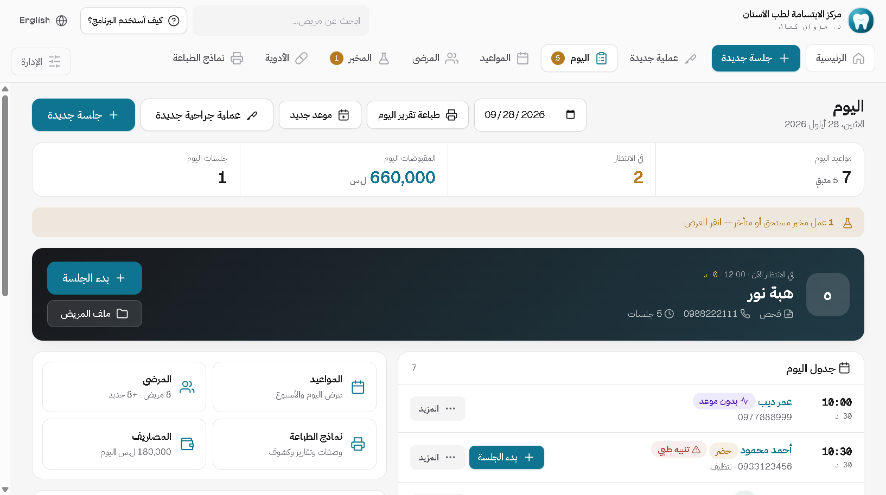
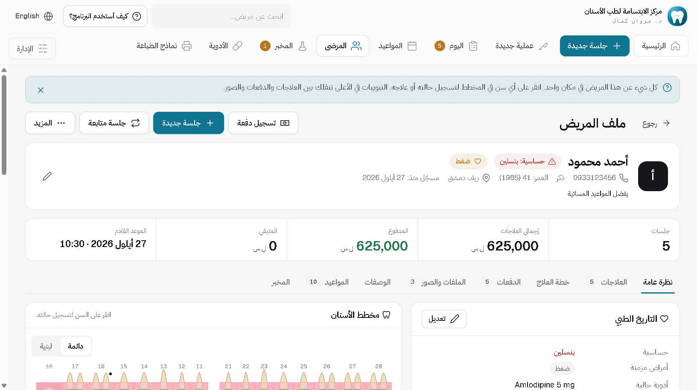
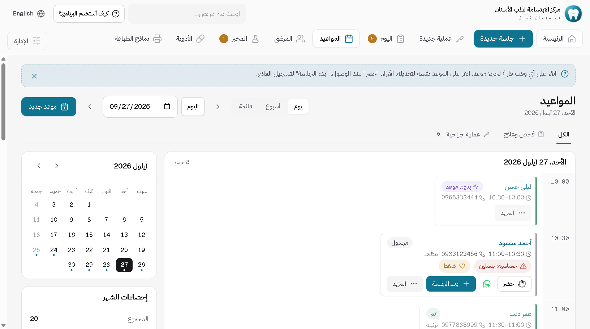
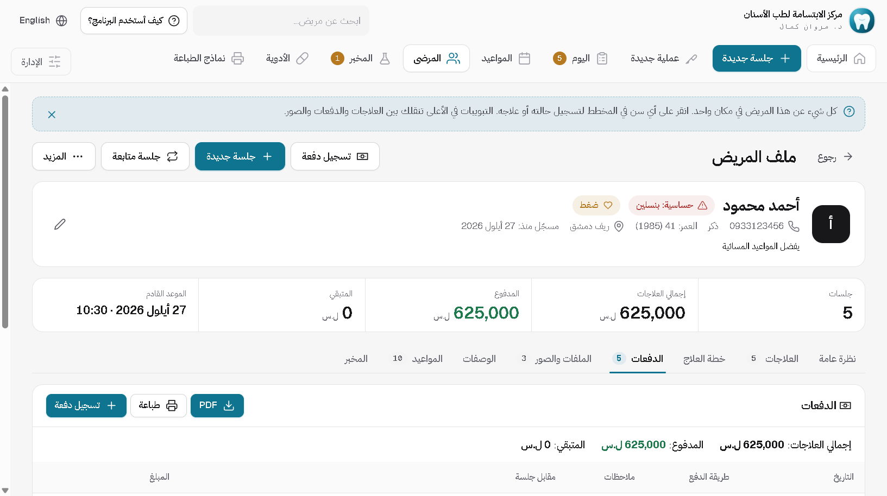
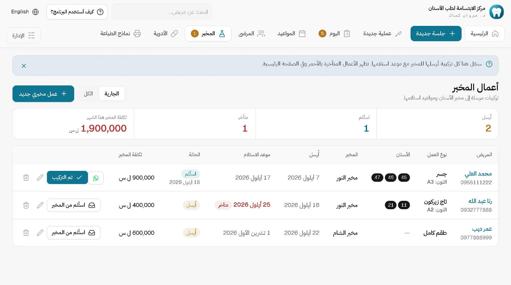

أسنان
من الموعد إلى الإيصال: مخطط أسنان واقعي، جلسات وعمليات، مخبر، أشعة وأقراص CBCT، ووصفات بترويسة عيادتك. على الكمبيوتر والتابلت.
للتابلت أو الموبايل. حمّله من الجهاز نفسه، وسيطلب أندرويد منك السماح بالتثبيت مرة واحدة.
طريقة تثبيت تطبيق أندرويدرمز هذا الجهاز تجده داخل البرنامج: الإعدادات ← ترخيص البرنامج. أرسله مع الطلب ويصلك رمز التفعيل.
من داخل البرنامج





ما الذي يفعله
مخطط أسنان واقعي
تيجان وزرعات وجسور ومعالجات لبية كما تبدو في الفم، وأكثر من حالة للسن الواحد. ومخطط للأسنان اللبنية.
مواعيد ومتابعة فورية
احجز على الأوقات الفارغة. وموعد المتابعة يُحجز في التقويم لحظة تكتب تاريخه في الجلسة.
حساب واضح وذمم
دفع كامل أو جزئي أو ذمة، بالليرة أو الدولار بسعر الصرف الذي تحدده، وإيصال بضغطة.
أشعة وأقراص CBCT
الصور تُربط بالسن الذي صُوّر، وقرص الـ CBCT يُنسخ كاملاً إلى ملف المريض مع برنامج عرضه.
مخبر وعمليات جراحية
تابع كل عمل مخبري بلونه وموعده. والعملية الجراحية جلسة مستقلة يُحجز بعدها موعد إزالة الخيوط.
كمبيوتر وتابلت معاً
تطبيق أندرويد للتابلت أو الموبايل يتصل بكمبيوتر العيادة عبر شبكة العيادة. السكرتيرة تبدأ الجلسة والطبيب يجدها مفتوحة.
التركيب يستغرق دقيقتين
لا تحتاج خبرة تقنية. حمّل الملف، شغّله، وافتح البرنامج.
نزّل الملف
اضغط زر التحميل في صفحة البرنامج. الملف ينزل إلى مجلد التنزيلات.
شغّل ملف التركيب
اضغط عليه مرتين. إذا ظهرت رسالة من ويندوز، اختر «مزيد من المعلومات» ثم «تشغيل على أي حال».
افتح البرنامج
سيسألك عن اسم العيادة والطبيب والشعار، ثم يصبح جاهزاً للعمل.
تثبيت تطبيق أندرويد
التطبيق لا يأتي من متجر Google Play، لذلك يسألك أندرويد مرتين قبل تثبيته. هذا طبيعي لأي تطبيق من خارج المتجر، وليس تحذيراً من فيروس.
نزّل التطبيق على الجهاز نفسه
افتح صفحة البرنامج على هذا الموقع من التابلت أو الموبايل واضغط «تحميل تطبيق أندرويد». إذا قال المتصفح إن الملف قد يكون ضاراً، اختر «التنزيل على أي حال».
اسمح بالتثبيت من هذا المصدر
افتح الملف من الإشعارات أو من «التنزيلات». سيقول أندرويد إن التثبيت من هذا المصدر غير مسموح: اضغط «الإعدادات»، فعّل «السماح من هذا المصدر»، ثم ارجع للخلف.
مرّ من فحص Play Protect
اضغط «تثبيت». إذا عرض Play Protect فحص التطبيق، اضغط «فحص التطبيق» وانتظر ثوانٍ ثم «تثبيت». وإذا ظهر «تم الحظر بواسطة Play Protect»، اضغط «مزيد من التفاصيل» ثم «التثبيت على أي حال».
افتح التطبيق
اضغط «فتح». ليتصل بكمبيوتر العيادة، يجب أن يكون التابلت على شبكة الواي فاي نفسها المتصل بها الكمبيوتر.
بعد التثبيت يمكنك إطفاء «السماح من هذا المصدر» مرة ثانية من الإعدادات. بعض الأجهزة (مثل شاومي وسامسونج) تعرض فحصاً خاصاً بها بأسماء أزرار مختلفة قليلاً: اختر المتابعة أو التثبيت. وإذا تعذّر عليك شيء، راسلني وسأساعدك خطوة بخطوة.


غير متأكد أي برنامج يناسبك؟
أرسل رسالة واذكر اختصاص عيادتك، وسأرد عليك بنفسي.